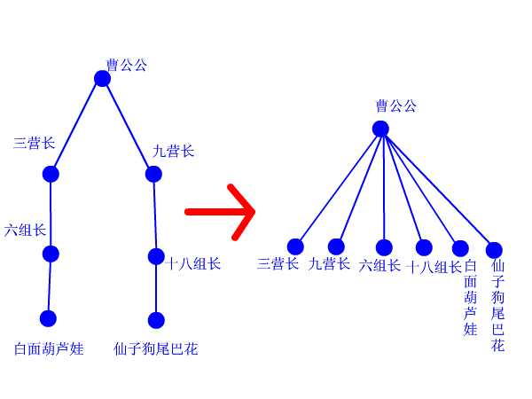

一、并查集的介绍
并查集（Union/Find）从名字可以看出，主要涉及两种基本操作:合并和查找。这说明，初始时并查集中的元素是不相交的，经过一系列的基本操作(Union)，最终合并成一个大的集合。
而在某次合并之后，有一种合理的需求： 某两个元素是否已经处在同一个集合中了？因此就需要Find操作
比如，若想知道某个元素 x 是否在集合 s1 中(Find操作)，返回集合 s1 的代表元素即可。这样，判断两个元素是否在同一个集合中也是很方便的，只要看find(x) 和 find(y) 是否返回同一个代表即可。
二、并查集的存储结构及实现分析
2.1、存储结构
并查集(大S)由若干子集合si构成，并查集的逻辑结构就是一个森林。si表示森林中的一棵子树。一般以子树的根作为该子树的代表。
而对于实际的并查集的存储结构，可用一维数组和链表来实现。这里主要介绍一维数组的实现。
假设一维数组s中的每个元素 s[i] 表示该元素 i 的父亲。这里有两个需要注意的地方：①我们用一维数组来存储并查集，数组的元素s[i]表示的是结点的父亲的位置。②数组元素的下标 i 则是结点的标识。如：s[5]=4，表示：结点5 的父亲 是结点4。
2.2、Union操作
Union操作就是将两个不相交的子集合合并成一个大集合。简单的Union操作是非常容易实现的，因为只需要把一棵子树的根结点指向另一棵子树即可完成合并。
2.3、Find操作
Find操作就是查找某个元素所在的集合，返回该集合的代表元素
int find(int x)
{
int r=x;
while(bin[r]!=r)
r=bin[r];
return r;
}这里find(int x)返回的是最里层递归执行后，得到的值。由于只有树根的父结点位置等于父节点数组里对应的值（bin[r]=r），故返回的是树根结点的标识。
2.4、路径压缩
思想：我们一开始找到了x的父亲节点，之后，我们随着（X—>X的祖先）这条路，一直把这条路上的所有节点的父节点都标记为祖先节点。从而加快了查找的速度。
int Find(int x)
{
int k, j, r;
r = x;
while(r != parent[r]) //查找跟节点
r = parent[r]; //找到跟节点，用r记录下
k = x;
while(k != r) //非递归路径压缩操作
{
j = parent[k]; //用j暂存parent[k]的父节点
parent[k] = r; //parent[x]指向跟节点
k = j; //k移到父节点
}
return r; //返回根节点的值
}
三、例题
畅通工程
Problem Description
某省调查城镇交通状况，得到现有城镇道路统计表，表中列出了每条道路直接连通的城镇。省政府“畅通工程”的目标是使全省任何两个城镇间都可以实现交通（但不一定有直接的道路相连，只要互相间接通过道路可达即可）。问最少还需要建设多少条道路？
Input
测试输入包含若干测试用例。每个测试用例的第1行给出两个正整数，分别是城镇数目N ( < 1000 )和道路数目M；随后的M行对应M条道路，每行给出一对正整数，分别是该条道路直接连通的两个城镇的编号。为简单起见，城镇从1到N编号。
注意:两个城市之间可以有多条道路相通,也就是说
3 3
1 2
1 2
2 1
这种输入也是合法的
当N为0时，输入结束，该用例不被处理。
Output
对每个测试用例，在1行里输出最少还需要建设的道路数目。
Sample Input
4 2
1 3
4 3
3 3
1 2
1 3
2 3
5 2
1 2
3 5
999 0
0
Sample Output
1
0
2
998
#include<stdio.h>
int pre[1010];
int find(int x){
int r,k,j;
r=x;
while(pre[r]!=r){
r=pre[r];
}
k=x;
while(k!=r){ //路径压缩
j=pre[k];
pre[k]=r;
k=j;
}
return r;
}
int main(){
int n,m;
while(scanf("%d",&n),n){
int i,x,y,c,d;
for(i=1;i<=n;i++) pre[i]=i;
scanf("%d",&m);
for(i=1;i<=m;i++){
scanf("%d%d",&x,&y);
c=find(x);
d=find(y);
if(c!=d) //合并
{
pre[d]=c;
}
}
int count=-1;
for(i=1;i<=n;i++){
if(pre[i]==i) count++;
}
printf("%d\n",count);
}
return 0;
}